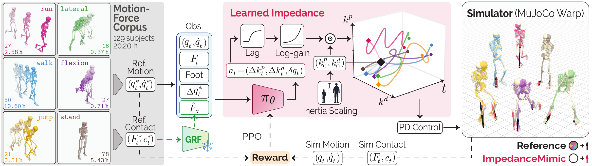

ImpedanceMimic Learned Impedance as Action Space for Force-Accurate Motion Imitation
Full paper under review. Earlier version accepted at NeurIPS 2026 PhysWorldAI and Sim2Science Workshops.
Recovering the forces behind a motion is ill-posed: different controllers can reproduce the same movement while exerting different contact forces. Most motion-imitation methods drive the simulated humanoid with fixed-gain proportional–derivative (PD) controllers, which we show enforce a compromise between tracking the motion and the resulting forces. We present ImpedanceMimic, a motion-imitation reinforcement-learning policy that outputs per-joint stiffness, damping and position setpoints, supervised by force measurements withheld at inference. Across 129 participants, nine datasets and six diverse activities from lunges to jumping, ImpedanceMimic outperforms fixed-gain PD, direct torque and muscle actuation on kinematic and force tracking, and approaches a dedicated motion-to-force regressor. With gains learned as multiples of inertia-scaled priors, our policy is the first to drive subject-scaled biomechanical models for every participant, without anthropometric input, and transfers zero-shot to new human and robot bodies. The learned impedance is an activity-structured, morphology-invariant encoding of motor state that generalizes to activities withheld from training. It occupies a low-dimensional, interpretable space in which stiffness scales with load and damping anticipates unloading.
One policy, six activities, many bodies
Joint angles and vertical force: reference (black) vs. ImpedanceMimic (red).
ImpedanceMimic (bone) on the reference (ghost). Forces: measured (black), simulated (red).
Learned stiffness kp vs. damping kd per joint; black ◆ = nominal gains.
Method
